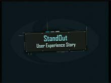

MIX is an intimate opportunity for cutting-edge technical, creative and business strategists to engage Microsoft in a conversation about the future of the web. In Las Vegas on March 5-7, 2008 MIX08 at…
Silverlight and Advertising[WMV] [2008/04/07]Come learn how advertisers, vendors, and publishers are using Microsoft Silverlight to create amazing rich media and monetize in-stream video ads. This session covers popular topics including…
Designing Next Generation User Interface Experiences with Microsoft Expression Blend and Windows…[WMV] [2008/04/07]Learn how Electric Rain utilizes the power of .NET 3.5 (Windows Presentation Foundation / Windows Communication Foundation) to build its breakthrough StandOut user interface using Microsoft Expression…
Building RESTful Real World Applications with the ADO.NET Data Services Framework [WMV] [2008/04/07]
[WMV] [2008/04/07]Come hear from developers creating real-world applications and user-interface controls on top of the ADO.NET Data Services Framework (aka Project "Astoria"). Learn best practices for building RESTful…
The Story of the Ribbon[MP4] [1:30:31] [2008/04/07]Farewell, menus and toolbars! Come hear the behind-the-scenes story of how the 2007 Office Ribbon user interface was imagined, designed, and validated. See never-before-shown early prototypes, hear…
Future of Advertising Technology [WMV] [2008/04/07]
[WMV] [2008/04/07]Come learn how Microsoft views advertising and is approaching the rapidly changing advertising industry.
Silverlight and Web Analytics[WMV] [2008/04/07]Rich Interactive Applications (RIAs) and media players built with Microsoft Silverlight are easily integrated with web analytics services like WebTrends On Demand, Omniture SiteCatalyst, and Microsoft…
Partying with PHP on Microsoft Internet Information Services 7 [WMV] [2008/04/07]
[WMV] [2008/04/07]Discover the advantages of running PHP applications on Microsoft Internet Information Services. Learn how to take advantage of the integrated pipeline and .NET functionality, and use the new remote…
Opportunities and Challenges in Mashing Up the Web [WMV] [2008/04/07]
[WMV] [2008/04/07]There are lots of different vendors offering lots of different technologies on which platforms may be built. Web 1.0 and Web services suffered from interoperability problems. What should we, as…
Keynote II [WMV] [2008/04/07]
[WMV] [2008/04/07]Microsoft CEO, Steve Ballmer will be joined by industry luminary and venture capitalist, Guy Kawasaki at Microsoft's MIX08 conference in Las Vegas for a wide-ranging discussion and open-mic Q&A…
Overview of Expression Encoder V2 [WMV] [2008/04/07]
[WMV] [2008/04/07]Come hear about all the great new features and capabilities in Microsoft Expression Encoder 2 including zoomable timelines, detailed event authoring, improved encoding accuracy and control, improved…
Virgins, Spaceships and Hob-nailed Boots![WMV] [2008/04/07]Experience Design must go wider than simply 'the Web'-for any business. Using well known brands like Virgin and Harrods as case studies, you will learn how to create Experience Architectures that…
Bringing Hosters and Developers Together with IIS7[WMV] [2008/04/07]Come learn about all the great new features in Microsoft Internet Information Services 7 for hosters and web farm managers including creating a highly customizable environment for building scalable…
Touch Me: Where Are Interfaces Going?[WMV] [2008/04/07]The keyboard and mouse are aging input devices. For the future of computing and UX, where are interfaces going? Are these enough? Is touch-screen Surface/iPhone/iPod Touch just a gimmick? Where should…
Bring Your Data to Life with Windows Presentation Foundation [WMV] [2008/04/07]
[WMV] [2008/04/07]Learn how easy it is to use Windows Presentation Foundation (WPF) to unite your UI with your data in a way that brings the data to life. This session demonstrates how WPF's extensive UI-data models,…
Take Your Content Mobile with Windows Mobile, Microsoft Expression, and Zumobi[WMV] [2008/04/07]Come watch us debunk the myth that creating content for mobile phones is a limiting proposition. We demonstrate how the triple-play of Windows Mobile, Microsoft Expression and Zumobi can help you…
Hard Rock: Behind the Music with Deep Zoom [WMV] [2008/04/07]
[WMV] [2008/04/07]Come see how Deep Zoom was used to turn the world's best collection of rock-and-roll memorabilia into a unique web experience. This session covers how this new Microsoft Silverlight 2 feature makes…
Creating Better User Experiences: Design Strategy[WMV] [2008/04/07]Join us for this session to gain the tools you need to establish and implement an effective design strategy, one that meshes business goals with appeals to the target customer.
E-commerce Done Right [WMV] [2008/04/07]
[WMV] [2008/04/07]Companies strive to provide great digital experiences that promote their content. We are in a new wave where enhancing the experience can open up new avenues for selling content. E-Commerce businesses…
Applications = Designers + Developers [WMV] [2008/04/07]
[WMV] [2008/04/07]Behind the scenes, great applications feature not only clever code, but they also expose a great user experience and design. We illustrate the workflow possible using the Microsoft Expression tools…
Unlocking the Creative Genome - XAML[WMV] [2008/04/07]Learn how Microsoft Expression Blend and Design can be used to create unified user experiences in desktop-based Windows Presentation Foundation applications as well as Web-based Microsoft Silverlight…
Integrating Your Site With Internet Explorer 8 [WMV] [2008/04/07]
[WMV] [2008/04/07]Learn what the new standards compliant engine in Microsoft Internet Explorer 8 means to you as a web designer, and how to utilize new layout functionality to create cross-browser-compatible layout…
Anatomy of a Dynamic SharePoint Website [WMV] [2008/04/07]
[WMV] [2008/04/07]Learn how Hed Kandi (http://beta.hedkandi.com/Pages/default.aspx) built their site on SharePoint using common Web Content Management features including identity/authentication and UI/UX skinning.
Tools and Applications for Publishers [WMV] [2008/04/07]
[WMV] [2008/04/07]Learn about Microsoft ad tools and how they can be used by software publishers and agencies to develop a variety of ad publishing products and services.
Encoding Video for Microsoft Silverlight[WMV] [2008/04/07]Learn how to optimize your video encoding quality regardless or the specific distribution and infrastucture approaches you use. Detailed scenarios will cover optimizing video encoding quality for…
Creating Better User Experiences: Design Methods [WMV] [2008/04/07]
[WMV] [2008/04/07]Join us to survey the landscape of interaction design methods, tools, and techniques to improve your ability to diagnose the business situation and select the right steps in the process to design a…
Getting Clued In to Experience Management[WMV] [2008/04/07]Experience Management thought leader and author Lou Carbone urges managing "experience clues", conscious and unconscious, because clues affect the emotions that shape customer attitudes that drive…
What Is the face of the next Web? [WMV] [2008/04/07]
[WMV] [2008/04/07]Web 2.0 appeared almost overnight from innovative uses of technology to break through the traditional HTML/JS browser ceilings. But what comes next? What is the face of the next web? What are the…
Real-World AJAX with ASP.NET [WMV] [2008/04/07]
[WMV] [2008/04/07]Dive deep into the new ASP.NET AJAX features and capabilities including patterns covering search optimization, user interface and usability, intuitive navigation, and much more.
Real World Design: Working with Silverlight and WPF in the Design Studio [WMV] [2008/04/07]
[WMV] [2008/04/07]Silverlight and WPF represent a new way for designers and developers work together. But what happens in a professional practice that's focused more on employing designers than developers and using…
Understanding Microsoft Partner Programs for Designers, Developers, and Agencies [WMV] [2008/04/07]
[WMV] [2008/04/07]Come learn about the partner programs that Microsoft has to offer designers, developers, and agencies to help more quickly grow their businesses. Hear how any size organization, ranging from small…
Creating Better User Experiences: Interaction Design[WMV] [2008/04/07]In this session, develop a framework to turn research findings into interaction design concepts. Learn how to take the raw data from research and craft design principles that you can turn into a…
Building Rich Internet Applications Using Microsoft Silverlight 2, Part 2[WMV] [2008/04/07]Learn how to use Microsoft Visual Studio to create applications, how to create UI using XAML markup and code, how to build a custom control, how to retrieve data from a Web service, and how to…
Beneath the Surface: The Natural Experience Vision[MP4] [1:17:58] [2008/04/07]Come hear how the Surface User Experience team is focusing on design and user experience as a key driver for creating more natural, intuitive and emotional products. Learn how Surface shifts the…
Social Networks: Where Are They Taking Us? [WMV] [2008/04/07]
[WMV] [2008/04/07]Social Networking sites are popping up all over the place. How many networks do we want to have? Should there be one network to rule them all? What is the future of Social Networks? Is it a ubiquotous…
The Open Question [WMV] [2008/04/07]
[WMV] [2008/04/07]Everyone is open now. But what does that mean to users? How open is open? Hear industry leaders share their thoughts on the characteristics that differentiate open from a marketing exercise to a value…
Building Great AJAX Applications from Scratch Using ASP.NET 3.5 and Visual Studio 2008 [WMV] [2008/04/07]
[WMV] [2008/04/07]Come see a no-slides, code-only presentation that starts with a blank directory and builds a data-driven, AJAX enabled, ASP.NET web application from scratch that implements common AJAX patterns with…
Developing Applications with Microsoft Virtual Earth[WMV] [2008/04/07]Learn how to incorporate Microsoft Virtual Earth's mapping and aerial photography data from around the world, in both 2- and 3-dimensional environments, into your own applications.
Developing with Windows Live [WMV] [2008/04/07]
[WMV] [2008/04/07]Learn how to build dynamic and interactive applications using the full capabilities of the Windows Live platform including APIs that enable streaming media, messaging, storage, presence,…
From Flash to Silverlight: A Rosetta Stone[MP4] [1:13:53] [2008/04/07]Come learn how Cynergy Systems has been translating skills in Flash/Flex development to Microsoft Silverlight 2 with an eye for great design. Learn how to create custom animation techniques, apply…
[T13]
[CT07]
[T06]
[BCT08]
[T28]
[T01]
[T22]
Effective User Interfaces in Windows Presentation Foundation and Microsoft Silverlight[MP4] [0:47:51] [2008/04/07]Come see how customizable user interfaces were created by extending XAML in a way that integrates various content formats into a single consistent UI. Learn how to build an effective UI, extend XAML,…
[T02]
[T35]
Keynote I[MP4] [2:28:24] [2008/04/07]From the Venetian Hotel in Las Vegas, Ray Ozzie, Chief Software Architect, will be joined by Corporate Vice President, Scott Guthrie and General Manager, Dean Hachamovitch to demonstrate the latest…
[B01]
[BC01]
[C05]
[UX02]
[T19]
[T26]
[UX03]
Creating Better User Experiences: Information Architecture[MP4] [0:34:13] [2008/04/07]Come to this session and we'll analyze content, features, and data within your system, whether it's a Website, intranet, or Web application. Learn how to create a model of your content that…
[PNL02]
[PNL05]
[BT01]
[T11]
[BT07]
[T08]
[PNL15]
[T24]
[T20]
[BT05]
[CT04]
[C04]
[C02]
[T15]
[UX10]
[PNL09]
[T04]
[CT01]
[BT03]
[CT03]
[T12]
[T07]
[T32]
[T03]
[BT04]
[PNL01]
[PNL14]
[BCT05]
[T31]
[PNL11]
[T10]